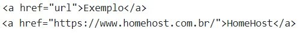

|
Estrutura Básicas HTML Parágrafos Cabeçalhos Linha Horizontal Listas Tabelas
Formulários Imagens Áudio e Vídeo Links
vamos entender o que são os links HTML, como surgiram,
sua sintaxe e algumas formas de aplicação. Além
disso, veremos diversos exemplos práticos, para você
praticar e utilizar em suas páginas HTML.
Desde a origem da internet, o que torna a web o que ela é hoje é justamente a possibilidade de vincular um documento a qualquer outro documento ou recurso. Essa função é chamada de hiperlink ou link. Mas afinal de contas, o que são os links HTML? O link HTML, nada mais é que uma função do HTML que permite inserir os hiperlinks em diversos elementos, comotextos e imagens. Um link precisa sempre apontar para uma URL (endereço) existente em seu site. Caso contrário,você poderá obter uma mensagem de erro 404.
No HTML, os links são definidos pela tag "a"". Dentro dessa tag incluímos o atributo href (Hypertext
Reference), que é o endereço de destino do link. Dentro do conteúdo da tag "a", incluímos então o texto
ou elemento que servirá como redirecionador, ou seja, que ao ser clicado, executará a função de
redirecionar para o endereço dentro do atributo href.
